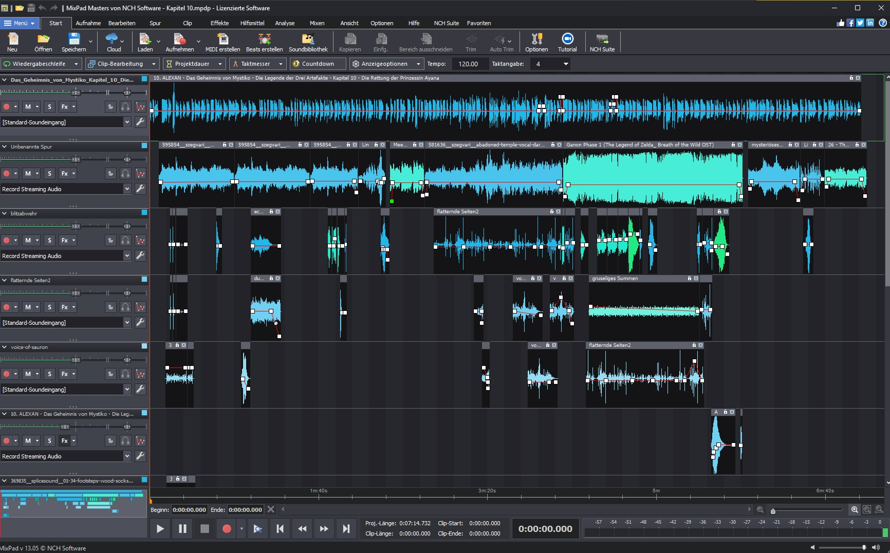

⏱️ Lesezeit Blog: 3 Min.
🎵 Zelda Manga Hörbuch:
Wie mein Fantasy Kinderbuch zum Zelda Film fürs Ohr wurde
Nachdem ich im vorherigen Blogbeitrag erzählt habe, wie mein Fantasy Kinderbuch im Stil eines Zelda Manga namens „ALEXAN – Das Geheimnis von Mystiko" entstand, möchte ich nun zeigen, wie daraus ein einzigartiges Hörspiel wurde. Was als einfaches Hörbuch begann, entwickelte sich zu einer Vision: ein Zelda Film für die Ohren.
💡 Die Idee: Ein Abenteuer für die Toniebox
Mein neunjähriger Neffe Alexan liebt seine Toniebox und hört gerne spannende Abenteuer. So kam mir die Idee, ihm mein Fantasy Kinderbuch als Hörbuch zu schenken. Das fertige Werk hat eine beachtliche Länge von 2 Std. 26 Min. erreicht. Da das für ein Kind am Stück zu viel ist, empfehle ich, die Dateien kapitelweise auf einen Kreativ-Tonie für die Toniebox zu laden. So kann man jede Nacht ein neues Kapitel auf die Toniebox bringen und die Vorfreude steigern.
Zuerst wollte ich die Erzählstimme auswählen und spielte ihm drei verschiedene Stimmen aus ElevenLabs vor, doch er wollte unbedingt, dass ich ihm die Geschichte persönlich erzähle. Also klonte ich meine eigene Stimme mit ElevenLabs und begann, das Buch aufnehmen zu lassen. Nach einigen Kapiteln merkte ich jedoch, dass etwas fehlte. Die Geschichte klang zu einheitlich für ein so lebendiges Kinderbuch wie Zelda.
📢 Jede Figur bekommt eine eigene Stimme wie im Zelda Manga
Da ElevenLabs es ermöglicht, Textabschnitte mit unterschiedlichen Stimmen zu vertonen, beschloss ich, jeder Figur ihre eigene Stimme zu geben. Ich erstellte eine Liste aller Charaktere und überlegte mir genau, wie sie klingen sollten. Dabei half mir auch ChatGPT, Empfehlungen zu finden, die perfekt passten. So entstand für jede Figur ein unverwechselbarer Klang und die Welt von Mystiko begann zu leben. Es fühlte sich fast so an, als würde man einen Zelda Manga zum Sprechen bringen.
🪄 Die Kunst des Erzählens eines Fantasy Kinderbuchs
Für jedes Kapitel aus meinem Zelda Manga erstellte ich ein eigenes Dokument. Dabei musste ich entscheiden, welche Passagen tatsächlich gesprochen werden sollten. Im Gegensatz zum Buch kann im Hörbuch manches weggelassen werden, da Ton und Stimme vieles bereits ausdrücken. Dann fügte ich in ElevenLabs Kapitel für Kapitel ein, wählte die passenden Stimmen aus und hörte mir die Ergebnisse direkt an. Mit etwas Feintuning bei Authentizität und Tonhöhe entstanden schließlich überzeugende Dialoge.
🎬 Ein Zelda Film für die Ohren: Vom Hörbuch zum Hörspiel
Trotz der tollen Stimmen fehlte mir noch etwas: die Magie eines echten Kinoerlebnisses. Als großer Fantasy- und Zelda-Fan wollte ich, dass das Hörerlebnis Gänsehaut erzeugt. Ich setzte mir das Ziel, ein cineastisches Hörbuch zu erschaffen, das eigentlich schon eher ein Hörspiel ist. Während das klassische Hörbuch oft nur von einem Sprecher lebt, ist dieses Werk ein echter „Zelda Film fürs Ohr".
Dazu suchte ich auf freesound.org nach passenden Musikstücken und Soundeffekten. Beim Score habe ich mich stark an Zelda orientiert, um diesen animehaften, magischen Stil einzufangen. Tagelang hörte ich mich durch unzählige Klänge, bis ich für jede Szene die passenden Geräusche und Melodien gefunden hatte. Am Schluss hatte ich einen Fundus von 400 Samples angesammelt. Ich überlegte mir für jeden Klang genau, wo er eingesetzt werden sollte, und legte die Samples pro Kapitel ab.
🎶 Das Mastering: Feinarbeit in sechs Spuren
Anschließend begann der technische Teil: das Mastering mit MixPad Masters von NCH Software. Ich legte jede Stimme, Musik und jeden Soundeffekt in separate Spuren und passte Lautstärke sowie Timing an. Teilweise arbeitete ich mit bis zu sechs Ebenen gleichzeitig.
Mein Anspruch an die Dramaturgie war hoch. In der Verwebung zwischen Emotionen und Musik diente mir Herr der Ringe als Messlatte. Dank meiner musikalischen Erfahrung gelang es mir, diese emotionale Tiefe und Spannung perfekt aufeinander abzustimmen, um einen Zelda Film für die Ohren zu erschaffen.
Ich erstellte zwei Versionen:
- Eine mit meiner eigenen Stimme als Erzähler, persönlich an meinen Neffen adressiert für seine Toniebox.
- Eine zweite mit einer klassischen, tiefen Erzählstimme für ein professionelles, atmosphärisches Hörerlebnis.

🎯 Das Ergebnis: Ein echter Zelda Film für die Ohren
Mein ehrgeiziges Ziel war erreicht: Aus meinem Kinderbuch wie Zelda war ein cineastisches Fantasy Hörspiel geworden. Es erfüllt mich mit Stolz, was für ein einzigartiges Werk ich hier erschaffen habe. Ein echter Zelda Film für die Ohren. Die Atmosphäre und der Score gehen mir jedes Mal selbst unter die Haut, wenn ich das Hörbuch höre.
Mein Neffe war begeistert, auch wenn er nach drei Kapiteln meist schon selig einschlief. 😄 Es ist einfach das perfekte Erlebnis für einen Kreativ-Tonie auf der Toniebox. Überzeugt euch am besten selbst und hört rein!
🧭 Wie geht es weiter mit meinem Kinderbuch wie Zelda?
Die Geschichte von Alexan und Mystiko soll weitergehen. Zwei weitere Fantasy Kinderbücher sind geplant mit neuen Kulturen, magischen Wesen und einem großen Finale im vierten Band. Natürlich wird es auch dazu wieder einen Zelda Film für die Ohren geben, vielleicht mit neuen Klängen oder mit vertrauten Melodien, die man schon aus diesem ersten Abenteuer kennt.
🎧 Ein cineastisches Hörbuch – auch für die Toniebox
Das Hörbuch gibt's in zwei Varianten:
- 🎧 Klassisch: Mit verschiedenen Stimmen.
- 🎬 Cineastisch: Mit atmosphärischer Musik, vielen Soundeffekten und individuellen Stimmen – ein echter Zelda Film für die Ohren.
Beide Versionen sind als MP3 erhältlich und funktionieren auch mit der Toniebox. Ideal zum Einschlafen oder für lange Autofahrten unterwegs.
🎞️ Erlebe noch mehr Magie von Mystiko auf YouTube:

❤️ Danke fürs Lesen! Ich freue mich über jedes Feedback, Kommentare und Unterstützung!
👉 Neugierig geworden? Entdecke hier die Welt von Mystiko, die Hörproben und das Level-Up-Prinzip:
ALEXAN - Das Geheimnis von Mystiko: Die Legende der Drei Artefakte